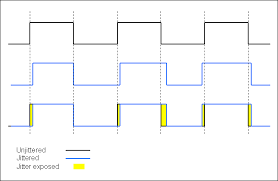
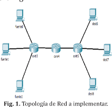

servicios
El tipo de servicio de DS se proporciona dentro de un dominio DS, que se define como una porción
contigua de Internet sobre la que se administra un conjunto consistente de políticas de DS. Normal-
mente, un dominio de DS debería estar bajo el control de una única entidad administrativa.

parametros
Parámetros detallados de las prestaciones del servicio, como rendimiento esperado, probabi-
lidad de descarte y latencia.

Latencia
Se refiere al tiempo que tarda un paquete en viajar desde su origen hasta su destino. La latencia debe ser lo más cercana a cero posible.
paquetes
Selecciona paquetes basándose en el campo DS (clasificador BA) o en va-
rios campos de la cabecera del paquete (clasificador MF).

octeto ds
Los paquetes se etiquetan para el tratamiento del servicio por medio del octeto DS, el cual se sitúa
en el campo tipo de servicio de la cabecera de IPv4, o en el campo clase de tráfico de la cabecera
IPv6. El RFC 2474 define el octeto DS con el siguiente formato: los 6 bits más a la izquierda
forman el código DS y los dos bits más a la derecha no se utilizan. El código de DS es la etiqueta
de DS utilizada para clasificar los paquetes para los servicios diferenciados.

configuracion y funcionamiento
La Figura 19.14 muestra el tipo de configuración prevista en los documentos sobre los DS. Un
dominio de DS consta de un conjunto de dispositivos de encaminamiento contiguos. Es posible llegar desde cualquier dispositivo de encaminamiento en el dominio a cualquier otro
encaminador en el mismo dominio, a través de un camino que no incluya dispositivos de encami-
namiento externos al dominio. Dentro de un dominio, la interpretación de los códigos de DS es
uniforme, de forma que se proporciona un servicio uniforme y consistente.